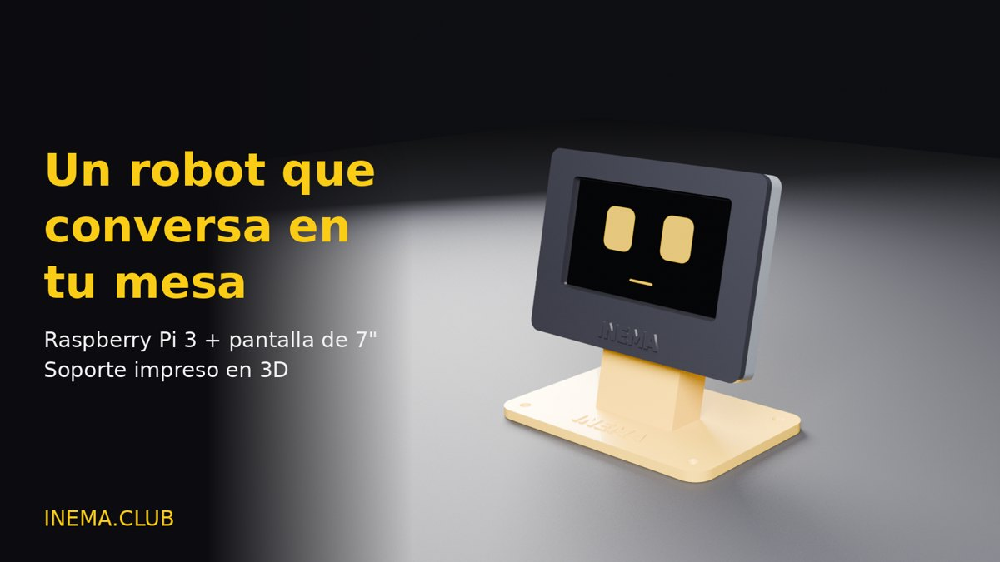
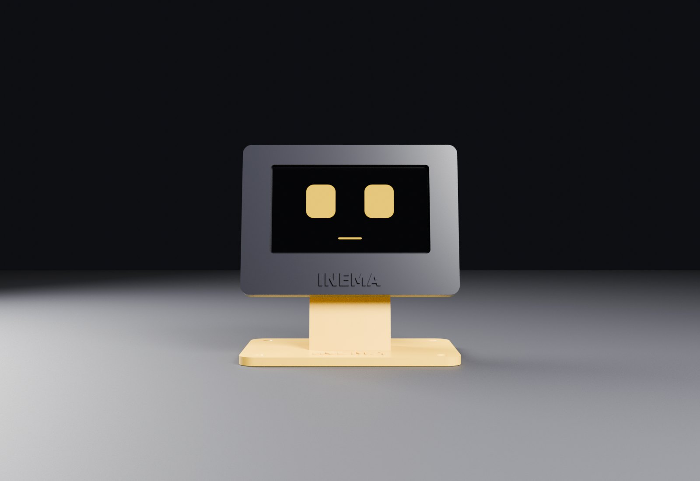
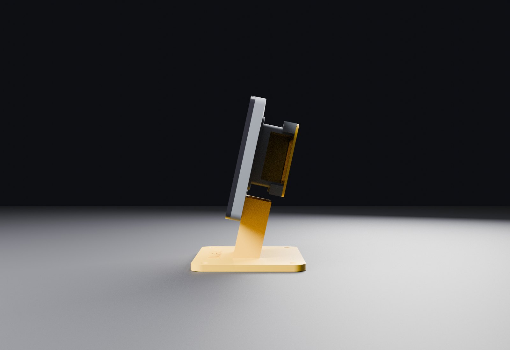
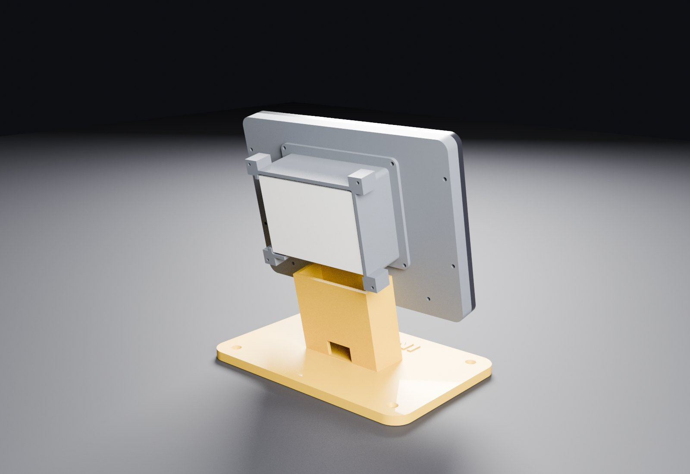

Habla con tu Jarvis sin abrir el celular ni la computadora: imagina tocar la pantalla, preguntar cualquier cosa en voz alta y ver cómo el rostro del robot piensa, habla y sonríe con la respuesta de tu propio Jarvis. Eso es lo que arma este proyecto: una Raspberry Pi 3 detrás de una pantalla de 7 pulgadas, en un soporte bonito, impreso en 3D y sujeto a la mesa. El soporte sirve para la Pi con caja y sin caja. Aquí están las piezas y el software; el conjunto se revisó en la computadora y todavía no se imprimió ni se montó.
Imagen generada a partir del modelo 3D real (Blender). El robot todavía no se ha impreso.
5–6piezas impresas (6 si tu Pi no tiene caja)
7"pantalla táctil, 800 × 480
2formas de usar el Pi: con y sin caja
210 × 140mm de base, con 4 tornillos en la mesa
211mm de altura total
0motores y soldaduras
En resumen
Robot conversa es un soporte de mesa impreso en 3D para Raspberry Pi 3 con la pantalla oficial de 7 pulgadas. Sobre el soporte se muestra una cara animada (ojos y boca en amarillo ARCKHÉ). Tocas la pantalla, hablas y el Pi envía tu voz a tu servidor Jarvis, que responde; el robot reproduce la respuesta y mueve la boca a su ritmo. Necesitas una impresora 3D de mesa lo bastante grande (sirve la Bambu Lab A1, de 256 mm), una Raspberry Pi 3, la pantalla, un micrófono USB y un altavoz. El diseño y el software se verificaron en la computadora, con pruebas automáticas y un servidor Jarvis simulado; todavía no se imprimió nada ni se conectó a una pantalla real. Jarvis necesita una ruta /conversa (el contrato está más abajo).

Cómo conversar
Toca, habla, escucha
El Pi es liviano: solo graba, envía el audio y reproduce la respuesta. Quien entiende lo que dices y piensa es tu servidor Jarvis. La cara cambia de estado en cada paso.
1
Escuchando
Tocas la pantalla. El marco se pone azul y los ojos crecen. El Pi graba con el micrófono USB.
2
Pensando
Tocas de nuevo (o pasan 12 s). El audio se envía a Jarvis y los ojos miran hacia arriba, con tres puntos.
3
Hablando
La respuesta suena en el parlante. La boca se abre según el volumen de la respuesta; el micrófono nunca se mueve.
4
Feliz
Termina: sonríe durante un segundo y vuelve al reposo, parpadeando y mirando alrededor.
Vista previa real del rostro (software/rosto/index.html) en los seis estados. El último, dormido, aparece durante 2 segundos cuando el servidor no responde.
Si el servidor se cae, el robot no se bloquea: muestra el rostro dormido durante 2 segundos y vuelve al reposo, listo para intentarlo de nuevo (esto tiene una prueba automática).
El proyecto
Pantalla grande, soporte firme, atornillado a la mesa
La pantalla queda inclinada 12° hacia atrás, a 211 mm del suelo, y tiene una base de 210 × 140 mm que atornillas al escritorio con cuatro orificios avellanados. El cuello es hueco: los cables bajan por dentro y salen por detrás.
Render del archivo CAD real. La pantalla muestra el rostro del software.

De frenteLa moldura de 6 mm cubre el borde de la pantalla; ARCKHÉ en relieve en el mentón y en la base.

De ladoInclinación de 12° y el bolsillo del Pi detrás de la pantalla, sobre el cuello.

Por detrás, con carcasaLa caja de tu Pi se desliza dentro del bolsillo; los cables bajan por el cuello.
Pi con o sin carcasa
Un soporte, dos formas de montar el Pi
El bolsillo detrás de la pantalla mide 100 × 72 mm y tiene 44 mm de profundidad. Si tu Pi ya viene en su propia caja (la de plástico que viene con la Pi), entra completa en el bolsillo impreso. Si no tiene caja, el adaptador atornilla la placa a cuatro postes M2,5 y queda expuesta, protegida por la tapa. En cualquier caso, el bolsillo impreso forma parte del proyecto.
Con cajaCabe una caja de Pi de hasta 98 × 68 × 30,5 mm. Mide la tuya antes de imprimir. Se apoya en cuatro soportes en las esquinas del bolsillo.Sin cajaEl adaptador sujeta la placa con la entrada USB/Ethernet hacia la derecha, donde la pared del bolsillo está abierta.
Vista explotada del modelo real (se omitió la pantalla). Orden, de adelante hacia atrás: marco, pantalla, placa trasera, bolsillo del Pi, tapa.
Versión compacta
Cabeza pequeña: Pi 3 + pantalla de 2,4″
La pantalla de 2,4″ es una placa que se conecta directamente al conector de 40 pines de la Pi (como un HAT), así que la Pi queda justo detrás y la cabeza mide 112.2 × 63.7 × 30.1 mm (la profundidad suma los 27.1 mm del frente y la tapa). El altavoz es el de la propia placa de la pantalla, y el micrófono es un micrófono USB que se conecta por el costado. El rostro se dibuja directamente en la pantalla, sin navegador.
El rostro de la versión compacta (vista previa generada por el propio programa, 320 × 240). Los mismos estados que en la versión grande.
Tres piezas
Frente de la cabeza (112,2 × 63,7 × 27,1 mm), tapa (112,2 × 63,7 × 9,5 mm) y poste con base (130 × 105 × 69 mm). La tapa tiene cuatro postes M2,5 que sujetan el Pi; el cable de alimentación baja por dentro del poste hueco.
Lo que compras
Raspberry Pi 3, pantalla de 2,4″ para Pi con altavoz integrado, micrófono USB mini y una fuente de 5 V / 2,5 A. Sin HDMI ni caja para el Pi.
Verificado en la computadora
No hay colisiones entre las piezas, el Pi y la pantalla; un conector USB entra por el costado; el cable llega hasta el poste. Dos pruebas negativas demuestran que un Pi más grueso o una pantalla 6 mm más grande chocan. Masa estimada: 184 g.
1
Prepara el Pi y la pantalla
Instala el sistema, conecta la pantalla al conector de 40 pines e instala el controlador que recomienda el vendedor de la pantalla. Después, comprueba si existe el framebuffer de la pantalla (suele ser /dev/fb1) y el dispositivo táctil:
sudo apt install python3-pil python3-numpy
ls /dev/fb*
ls /dev/input/by-path
2
Ejecuta el puente y el rostro
Descarga y extrae el robo-conversa-software.zip (en las descargas), entra en la carpeta extraída e instala también sudo apt install alsa-utils espeak-ng (grabación y voz de respaldo). El puente es el mismo que el de la versión grande. El rostro pequeño dibuja en el framebuffer y se comunica con el puente. Los números /dev/fb1 e event0 son ejemplos: usa los que aparezcan en tu Pi. Sin el driver de la pantalla y estos ajustes, es probable que esta versión no funcione a la primera.
Para ver el rostro sin pantalla: python3 rosto/rosto_fb.py --png falando rosto.png. Pantalla de 3,5″ (480 × 320): ROSTO_LARG=480 ROSTO_ALT=320. Pantalla montada de lado: ROSTO_GIRO=90.
Lo que NO se verificó en la versión compacta: las medidas de la pantalla de 2,4″ son típicas de una placa con formato Pi Zero (65 × 56,5 mm) y el anuncio no muestra el contorno, así que mide la tuya con el calibrador y cambia solo los números al principio de cad/gerar_compacta.py (las pruebas indican si aún cabe). Tampoco se probaron: el controlador de la pantalla, el tacto, el sonido de la placa (audio por PWM, calidad básica), el calentamiento del Pi dentro de la caja cerrada y ninguna impresión.
¿Y la versión grande, con pantalla de 7″: tiene micrófono y altavoz?
El diseño tiene espacio para ambos, pero aún no se han probado con sonido real. El micrófono (una placa pequeña de 14 × 14 mm, como la INMP441) va en un espacio en la parte superior del marco, con un orificio de sonido hacia arriba y un canal para el cable. El altavoz redondo de 40 mm va en una caja junto al cuello, orientado hacia arriba y fijado a la base con dos tornillos M3 por debajo (pieza Caja del altavoz, en las descargas). Si prefieres, el micrófono USB y la bocina pequeña siguen siendo válidos.
Modelo 3D
Gira el robot en tu mano
Este es el archivo de montaje del proyecto (el mismo GLB de la descarga). Arrastra para girarlo y usa dos dedos o la rueda del mouse para acercar la imagen. La caja blanca representa el espacio máximo de la caja del Pi.
Arrastra para girar
Si el modelo no aparece, descarga el GLB y ábrelo en cualquier visor 3D.
100 × 72 × 44 mm (caja de hasta 98 × 68 × 30,5 mm)
Modelo CAD
Masa estimada
≈ 724 g
Estimación (PLA a ~35%, pantalla de 300 g, Pi de 80 g); pesa el conjunto después de montarlo
Atornilla la base a la mesa. Según los cálculos del modelo, sin los tornillos una fuerza de unos 2.2 N en la parte superior de la pantalla ya hace que el robot se vuelque hacia atrás, y tocar la pantalla implica empujarla. Con cuatro tornillos para madera de 4 mm queda fija.
Parte técnica
El kit: para quienes van a imprimir y montar
No necesitas esta parte para entender el proyecto. Para montarlo, sigue este orden: material, impresión, montaje físico, software y prueba.
Qué necesitas
Piezas comunes de electrónica y ferretería. Los precios varían; compruébalos antes de comprar.
1×
Raspberry Pi 3 (B o B+)
Con fuente de 5 V / 2,5 A y tarjeta microSD de 16 GB o más. Con o sin caja.
1×
Pantalla táctil Raspberry Pi de 7"
Original (800 × 480). La Touch Display 2 tiene otro contorno: consulta los parámetros en cad/gerar.py.
1×
Micrófono USB
El Pi 3 no tiene entrada para micrófono. Sirve cualquier micrófono USB pequeño.
1×
Altavoz pequeño
Con conector P2 de 3,5 mm (el Pi 3 tiene salida) o USB.
opc.
Micrófono y altavoz integrados
Versión grande: micrófono de placa de 14 × 14 mm y altavoz de 40 mm, 3 W, con la caja impresa. Versión compacta: pantalla de 2,4″ con altavoz y un micrófono USB mini.
6×
Tornillo M3 × 16
Fijan el marco (4 en los laterales, 2 en la barbilla).
4×
Tornillo M3 × 12
Fijan el cuello a la barbilla de la placa.
4×
Tornillo M3 × 8
Sujetarán el bolsillo del Pi a la placa trasera. Solo si la Pi no tiene caja: más 4 para el adaptador.
4×
Tornillo M3 × 10
Cierran la tapa. Solo si no tiene caja: 4 tornillos M2,5 × 6 sujetan la placa a los postes del adaptador.
4×
Tornillo para madera 4 × 25
Fijan la base a la mesa (cabeza avellanada).
hasta 0,9 kg
Filamento
0,9 kg si las piezas fueran macizas; con un relleno del 15–25%, aproximadamente la mitad. PLA o PETG, aún sin probar. Tres colores bonitos: grafito, negro y amarillo.
A1
Impresora 3D
La mesa de 256 mm (Bambu Lab A1) admite todas las piezas.
ideal
Calibrador
Para medir la pantalla, el Pi y su carcasa antes de imprimir.
Para conectar la pantalla al Pi, usa el cable plano DSI y los dos cables de alimentación que vienen con la pantalla. El soporte no incluye alimentación propia.
Descarga y empieza por la pieza más pequeña
Un archivo STL es el modelo 3D. Aún hay que laminarlo para tu impresora; no es una instrucción de impresión lista para usar. Todos los STL ya vienen en la posición de impresión.
Los volúmenes corresponden a las piezas macizas; con un relleno del 15–25% el consumo es mucho menor, y Bambu Studio muestra el valor real al laminar. Los ZIP no incluyen G-code ni un perfil 3MF validado. Ver el informe de verificación (JSON).
Imprime en este orden
Imprime primero las piezas pequeñas para probar lo que depende de tus medidas, y deja la base para el final. Recuerda: son piezas de estudio, aún sin ninguna impresión de prueba; usa poco filamento hasta lograr el primer encaje.
1
Mide antes de imprimir
Con el calibrador, mide tu caja del Pi (o la placa sin caja) y la pantalla. La caja cabe si mide hasta 98 × 68 mm de frente y 30,5 mm de fondo. Si es más grande, cambia BOLSO_W/H/D no cad/gerar.py y vuelve a generarlo (el script avisa si algo choca).
2
Elige tu impresora
En Bambu Studio, selecciona Bambu Lab A1, boquilla de 0,4 mm y el filamento real. Una capa de 0,2 mm, 3 paredes y un relleno del 15–25% son un punto de partida sin probar.
3
Abre una pieza a la vez, sin girarla
Mantén el 100%. Cada STL ya está en la posición de impresión (moldura con ARCKHÉ hacia arriba, placa trasera de espaldas, caja y tapa con la brida sobre la mesa). Comprueba el tamaño esperado en la tabla de descargas; una medida muy distinta indica una escala o una orientación incorrecta.
4
Prueba de ajuste
Imprime la tapa y el bolsillo del Pi y comprueba si tu caja de Pi (o la Pi en el adaptador) entra en el bolsillo. Luego coloca el marco sobre la placa trasera con la pantalla real dentro: la pantalla debe encajar sin forzarla. Solo entonces imprime la base y el cuello.
5
Sin soporte, con poco apoyo
Las piezas se diseñaron para imprimirse sin soportes: el cuello inclinado tiene solo 12° de inclinación y la salida de cables es un arco corto. Si tu laminador pide soportes en algún punto, avísalo en la ficha del proyecto.
Monta en seis pasos
Monta la estructura con la pantalla antes de encender el Pi. Todos los tornillos son M3 de cabeza cilíndrica.
1
Pantalla en la placa trasera
Encaja la pantalla en la cavidad de la placa trasera, con el vidrio hacia delante. La placa del controlador de la pantalla pasa por la ventana de 104 × 72 mm; comprueba que nada roce.
2
Moldura por encima
Coloca el marco al frente y fíjalo con los 6 tornillos M3 × 16 que se insertan por detrás de la placa (4 en los laterales, 2 en la barbilla). No aprietes demasiado: la rosca está hecha en la propia pieza.
3
Cuello en la barbilla
Por la parte superior del cuello (que es hueco), pasa los 4 tornillos M3 × 12 por los orificios de la pared frontal y enróscalos en el mentón de la placa con un destornillador largo. El soporte ya tiene una inclinación de 12°.
4
Bolsillo del Pi en la placa
Sujeta el bolsillo impreso con 4 tornillos M3 × 8 a través de la brida. Conecta el cable DSI de la pantalla a la Pi y los dos cables de alimentación a la Pi (o alimenta la pantalla con otro cable, como indica su documentación).
5
Pi dentro, cables hacia abajo
Con caja propia: desliza la caja del Pi dentro del bolsillo hasta que se apoye en los soportes. Sin caja: atornilla el adaptador a los soportes (4 × M3 × 8) y la placa a los postes (4 × M2,5), con la entrada USB/Ethernet hacia la derecha. El micrófono, el parlante y la fuente de alimentación bajan por la abertura inferior, atraviesan el cuello y salen por la abertura en la parte trasera de la pared.
6
Tapa y base
Cierra con la tapa (4 × M3 × 10). Marca los cuatro orificios de la base en la mesa, haz los agujeros guía de 2,5 mm y fíjala con los tornillos para madera.
Calor y cables. El Pi 3 se calienta y el bolsillo se cierra con una tapa con 11 aberturas. Todavía no medimos la temperatura en su interior: después de montarlo, pon el robot en marcha durante 30 minutos y toca la tapa. Si está muy caliente, quita la tapa o aumenta las aberturas.
Pon el software en marcha
Todo en Python puro (solo biblioteca estándar), sin instalar paquetes. Ejecutar la conexión y el rostro no usa ninguna API de terceros: la única llamada de red es a tu Jarvis.
1
Prepara el Pi
Instala Raspberry Pi OS (con entorno de escritorio) y conéctalo a la red. En la terminal del Pi:
sudo apt update
sudo apt install -y chromium alsa-utils espeak-ng # em versões antigas do Raspberry Pi OS o pacote se chama chromium-browser
arecord -l # confira que o microfone USB aparece
aplay -l # e a caixinha de som
2
Copia el software
Descarga el ZIP del software de arriba, cópialo en la Pi y extráelo. Entra en la carpeta extraída:
unzip robo-conversa-software.zip
cd robo-conversa-software
3
Prueba sin Jarvis ni micrófono
Las pruebas inician un Jarvis falso y comprueban toda la conversación (estados del rostro, token, boca sincronizada con el audio de la respuesta y caída del servidor):
python3 testes/test_ponte.py
Debe terminar con OK (4 pruebas).
4
Apunta a tu Jarvis
Define la dirección de tu servidor y, si tienes, el token. El robot se comunica con POST <JARVIS_URL>/conversa:
export JARVIS_URL=http://ENDERECO-DO-SEU-SERVIDOR:PORTA
export JARVIS_TOKEN=seu-token # opcional
export ROBO_VOZ=pt-br # voz de reserva do espeak-ng (en-us, es...)
python3 ponte/robo.py
5
Abre la cara en pantalla completa
En otra terminal del Pi, con la pantalla de 7" encendida:
chromium --kiosk --noerrdialogs http://127.0.0.1:8765/ # ou chromium-browser
Toca la pantalla para hablar y tócala de nuevo para enviar (la tecla Espacio hace lo mismo). La Pi 3 es modesta: la primera vez que se abre Chromium puede tardar.
Qué debe responder tu Jarvis
El contrato es pequeño y es el punto que adaptas a tu servidor:
POST /conversa {"audio_wav_b64": "...", "texto": "...", "sessao": "robo-mesa"}
→ {"ouvido": "o que entendeu", "resposta": "texto",
"audio_wav_b64": "opcional (WAV 16 bits)"}
El robot envía el audio grabado (WAV 16 kHz, mono). Tu servidor lo transcribe, procesa y devuelve el texto de la respuesta. Si también devuelve el audio, el robot lo reproduce; si no, lee el texto con el espeak-ng del propio Pi (voz simple). Tu servidor elige el servicio de voz y de IA, con sus propias reglas y credenciales; el robot no guarda ninguna clave.
Seguridad: el token y tu voz viajan hasta Jarvis por la red. Usa una red privada, VPN o HTTPS; no uses HTTP abierto en internet. El puente del robot solo escucha en 127.0.0.1 (las rutas /ouvir, /parar e /texto no tienen contraseña porque solo permiten el acceso local desde la propia Pi).
La ruta /conversa todavía no existe en el Jarvis de nadie. Tú (o tu agente de programación) debes exponer esta ruta en el servidor. En las pruebas se simula mediante ponte/jarvis_falso.py. La conversación real con tu Jarvis, el micrófono y el parlante aún no se han probado en hardware.
Abrir automáticamente al encender la Pi
Cuando todo funcione, crea dos servicios (uno para ponte/robo.py, otra para Chromium en pantalla completa) o coloca los dos comandos en ~/.config/autostart. Si la conversación por el Wi-Fi de la Pi 3 se vuelve lenta, prefiere una conexión por cable de red.
Lo que se comprobó en la computadora
El generador CAD (cad/gerar.py) arma las piezas mediante código y ejecuta estas comprobaciones cada vez. Solo son válidas para el modelo; no se probó en el banco de trabajo.
Piezas
Mallas cerradas, volumen positivo, un cuerpo por STL, todas de menos de 256 mm y apoyadas en la mesa por la cara correcta (área de contacto medida).
Encajes
No hay intersecciones entre las piezas del montaje; la pantalla, la placa del controlador, la caja del Pi de 98 × 68 × 30,5 mm y el Pi sin caja con adaptador caben sin colisiones. Una prueba negativa demuestra que una caja más grande choca.
Cables y estabilidad
Un canal para el cable de 12 mm va desde la caja hasta la salida del cuello sin tocar nada. Centro de masa a 73.2 mm de la parte delantera y a 66.8 mm de la parte trasera de la base.
Lo que NO se verificó: laminado e impresión; los orificios y conectores reales de la pantalla y del Pi (vienen de la hoja de datos); la posición exacta del área visible; el calentamiento del Pi dentro del compartimento; la resistencia de los insertos para tornillos; el micrófono, el parlante y el Jarvis reales. Mide todo con el calibrador antes de imprimir.
Dónde está el proyecto
Hecho
Estudio mecánico y software en la computadoraSeis piezas diseñadas a partir de las medidas oficiales, con las comprobaciones anteriores; rostro animado y conexión con Jarvis con 4 pruebas automáticas.
Ahora
Prueba en el bancoImprimir la tapa y el bolsillo, medir tu caja de Pi, montar con la pantalla real y hacer funcionar el robot con micrófono y parlante.
Después
Ruta /conversa en tu JarvisExpón la ruta en el servidor, elige la voz y la transcripción de su lado y prueba la conversación de principio a fin.
Futuro
Palabra de activación y movimientoDespertar al robot con la voz (sin tocarlo) y, quién sabe, una base que gire. Nada de eso está decidido.
Preguntas frecuentes
¿Necesito el Arduino?
No. La idea inicial usaba un Arduino Uno solo para dibujar los ojos, pero con Raspberry Pi, el propio Pi dibuja la cara y se comunica con el servidor. Una pieza menos, sin firmware ni cable serial.
¿Es compatible con Raspberry Pi 4 o 5?
El bolsillo admite la placa y el orificio es el mismo, pero los puertos están en otros lugares (y el Pi 5 se calienta más). Prueba con el adaptador antes de imprimir todo y comprueba los conectores.
¿Es compatible con otra pantalla de 7"?
Solo si el contorno es parecido. La Touch Display 2 (189,5 × 120 mm) y las pantallas HDMI genéricas tienen otras medidas: cambia los parámetros al comienzo de cad/gerar.py y vuelve a generarlo.
¿El robot ya conversa?
Todavía no de verdad. La cara, la grabación y el puente están listos y probados con un servidor simulado. Falta la ruta /conversa en tu Jarvis y la prueba con micrófono y altavoz.
¿La conversación usa alguna API paga?
El robot solo llama al servidor que indiques en JARVIS_URL. Lo que este servidor usa para entender la voz y responder es una elección tuya, con tus costos y permisos.
¿Se puede usar sin pantalla táctil?
Sí: la tecla Espacio hace lo mismo que tocar la pantalla. En un teclado USB, o usa curl -X POST http://127.0.0.1:8765/ouvir e /parar.